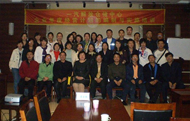

企业战略规划的制定与执行
张九元老师
来源：战略经营课程 点击:342次
职业生涯：
38年的职业生涯是这样度过的：6年政府公务员，8年大型国企中层管理者，4年小型国企法人代表，3年高校理论研究者，17年咨询公司顾问。
课程简介：
随着中国企业的国际化和国内经济改革的逐步深化，对于具备现代管理思想和管理技能的各级经理人员的需求越来越大，企业各级管理者参加现代工商管理培训就显得尤为重要。企业战略管理是工商管理专业的一门核心课程，也是现代企业高层管理人员应具备的基本技能之一。企业战略与企业内部资源和外部环境能否相适应，左右着企业组织的生存与发展状况。
本课程以现代企业发展的最新趋势为依据，通过企业战略管理课程系统的教学活动，使学员掌握企业战略管理的基本知识、基本原理，熟悉基本的企业战略分析、制定、实施等方法和工具，具备良好的企业战略管理实际操作技能。
通过学习本课程，您将能够提高战略管理意识，明确所在组织存在的战略问题;对组织的经营理念进行系统的反思、设计和实施，使其战略管理模式适应所在企业的情况;借鉴中外企业成功与失败战略案例;明确并实施产品市场战略;明确并实施企业成长战略;明确并实施企业变革战略;掌握一套行之有效的战略制定发展规划的方法。
课程特色：
1、系统思维。以中国传统文化为指导，结合中国国情、企情、人情创建、设计的课程内容，强调整体和系统的优化。
2、简明实战。以效果为导向，理念和实际紧密结合。帮助高中层管理人员快速、有效地提升自己的含金量，使自己管理的团队绩效得以快速提升，为企业创造更大价值，从而开辟自己光明的职业生涯通路。
3、轻松愉快。以翔实的案例进行分析，实用性、操作性强，并采用教学互动、疑难解答等方式，使学员在轻松地学习中掌握更多的方法、技能。
课程重点：
1、什么是战略?
2、为什么要制定企业战略?
3、怎样树立正确的战略?
4、制定企业战略的基本步骤有哪些?
5、如何培育最有价值的企业核心竞争力?
6、如何避开容易出现的战略误区?
课程对象：
企业高中层管理者，希望学习实用战略管理的人士
培训课时：
标准课程两天(12小时)
课程提纲：
一、什么是战略
1、一般性的定义
2、战略的本意
3、战略的五个特征
4、战略的作用
二、我们为什么需要战略
1、企业生存与发展的需要
2、为什么当前需要特别关注战略
3、战略管理伴随企业一生
4、我们需要什么样的战略
三、怎样树立正确的战略
1、什么是正确的战略
2、正确的战略来自于正确的经营理念
3、经营理念的主要内容
4、设计经营理念的步骤
5、实施经营理念的方法
6、绝不可以抄袭别人的战略
四、制定企业战略的基本步骤有哪些
1、准确定位企业
2、锁定企业目标
3、分析企业资源
4、定位盈利模式
5、确定实施步骤
6、跟踪进行调控
五、如何培育最有价值的企业核心竞争力
1、选择合适的持续改进战略
2、企业家的战略思维
3、学会放弃
4、发挥优势与强身健体
六、如何避开容易出现的战略误区
1、企业的成功就是因为企业制定了优秀的战略
2、企业战略是复杂的、隐蔽的
3、企业战略是企业领导人最重要的工作
4、企业战略是一个专门学问，必须请专家来做
七、强化战略管理
1、战略管理的内容
2、战略的制定与修订
3、战略方案的选择
4、战略的评估
5、战略的实施
6、战略提升与滚动发展
八、中国企业战略的特殊性
1、用中国哲学来指导战略制定
2、不必照抄发达国家的企业战略
3、从单纯竞争的误区中解脱出来
4、市场经济的初级阶段企业具有巨大潜力
九、给中国企业的战略建议
1、立足自身实际，认真回答“我是谁”
2、不要言必谈500强
3、坚持核心竞争力不动摇
4、强身健体是战略实施的关键
5、稳健经营是永续经营的保证
6、坚持走可持续发展的道路
总结：根据培训现场情况和学员反馈做出
说明：
1、案例穿插讲解，不再单独列出。
2、等提纲通过后，再提供相应PPT;
3、留时间回答学员问题。